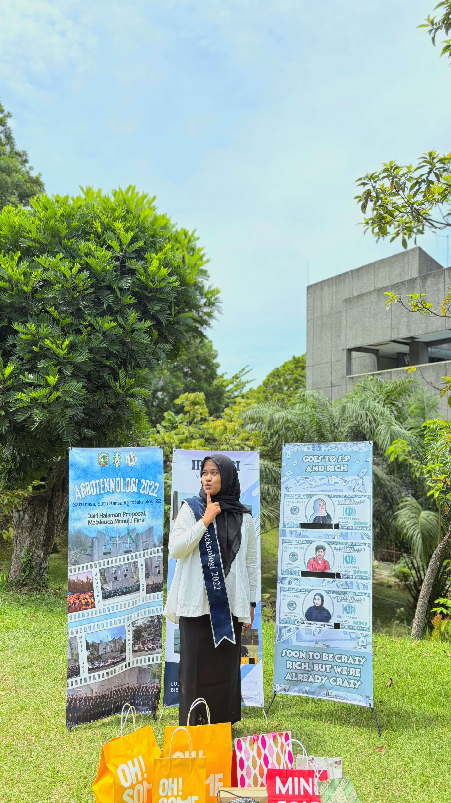
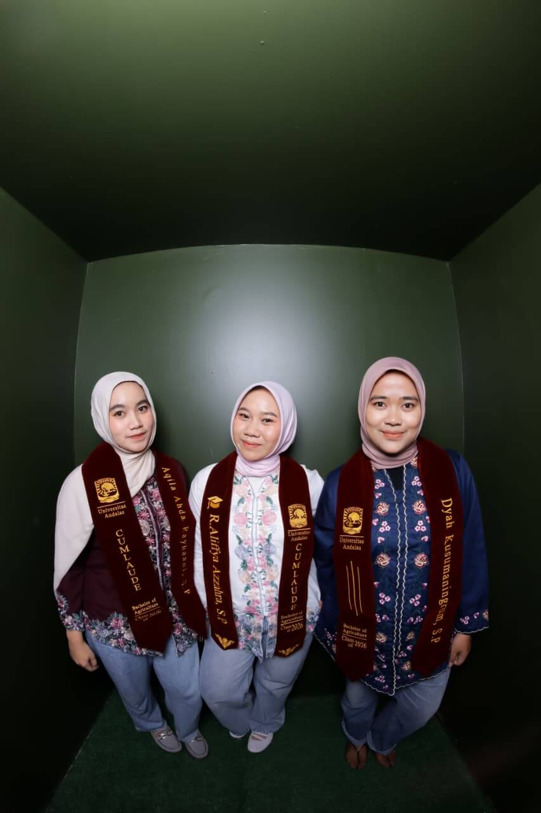
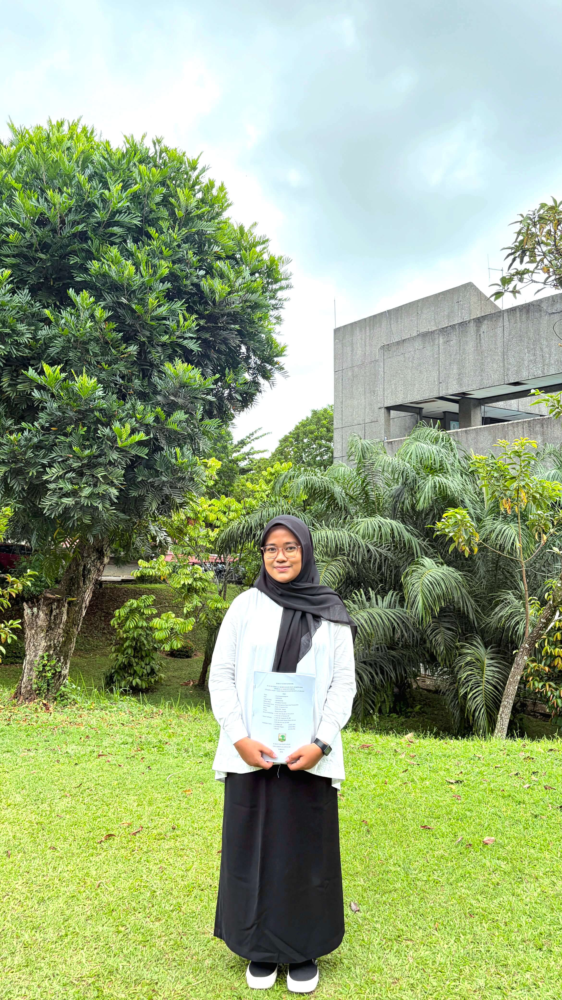

Prosesi Sidang Wisuda
Sabtu, 19 September 2026
Pukul 08.00 - 12.00 WIB
Auditorium Universitas Andalas
The Graduation of
Program Studi Agroteknologi • Universitas Andalas
Penuh rasa syukur ke hadirat Tuhan Yang Maha Esa atas kelulusan dan purna studi Sarjana Pertanian.







Kampus Limau Manis, Jalan Dr. Mohammad Hatta, Limau Manis, Kecamatan Pauh, Kota Padang, Sumatera Barat
Petunjuk Parkir / Titik Kumpul: Halaman Gedung Rektorat Universitas Andalas.
Semuanya bermula dari sebuah proposal, dengan banyak keraguan dan ketakutan tentang bagaimana perjalanan ini akan berakhir. Hari itu menjadi langkah pertama dari penelitian yang kemudian membawa begitu banyak cerita, tentang belajar, bertahan, dan perlahan percaya pada diri sendiri.
Setelah berbulan-bulan berkutat dengan penelitian, data, dan revisi yang menguras tenaga dan pikiran, akhirnya sampai pada seminar hasil. Tidak pernah terbayang bahwa setelah hari itu, perjalanan menuju akhir akan berjalan begitu cepat.
Hanya beberapa hari setelah semhas, datang kesempatan untuk mengikuti ujian komprehensif pada 24 Agustus. Jujur, tidak pernah menyangka akan dipercaya dan diberi kesempatan melangkah secepat itu. Di tengah rasa lelah dan ketidaksiapan yang masih terasa, ternyata kesempatan itu adalah jawaban dari doa-doa yang selama ini diam-diam dipanjatkan. Hingga akhirnya, hari yang ditakuti justru menjadi hari ketika satu kalimat mengakhiri semuanya: dinyatakan lulus.
Hari ini menjadi penutup dari perjalanan yang pernah terasa begitu panjang. Terima kasih kepada Mama, Papa, dan mas, serta keluarga, sahabat, dan mereka yang hadir dalam setiap prosesnya. Ada begitu banyak hal yang tidak terlihat di balik sebuah gelar. Lelah yang disembunyikan, air mata, doa, dan keberanian untuk tetap berjalan. Hari ini, semuanya dirayakan bukan karena perjalanannya mudah, tetapi karena akhirnya berhasil sampai.